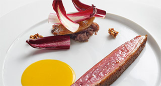

Magret de pato con Oporto y naranja. Tatin de chalotas con vino tinto y especies
"Un magret sencillo con contrastes cítricos, dulces y especiados, realizado en un plis plas."

| Magrets de pato | 2 un. |
| Sal gruesa | 800 gr. |
| Azúcar | 80 gr. |
| Pimienta | 2 gr. |
| Tomillo limón | 2 ramas |
| Hojas de mandarinal | 6 un. |
 |
|
| Chalotas | 24 un. |
| Oporto | 75 ml. |
| Vinagre balsámico | 25 ml. |
|
|
| Zumo de naranja | 100 ml. |
| Miel de azahar | 25 ml. |
| Mantequilla | 25 gr. |
| Especias | 1 cc. |
| Xantana | 1 gr. |
|
|
| Pasta Philo | 2 Hojas |
| Mantequilla fundida | 40 gr. |
| Tomillo limón | 4 ramas |
- Mezclar la sal, el azúcar y la pimienta. (Marinada).
- Macerar los magrets en la marinada de sal un mínimo de 30'.
- Retirar el magret de la marinada y limpiarlo bien. Hacer cortes en la parte de la grasa del magret en forma de cuadrícula.
- Marcar los magrets en una sartén sin ningún tipo de grasa hasta que esté bien crujientes.
- Cortar hojas de papel de aluminio del tamaño suficiente para contener el magret.
- Colocar en el centro de la hoja el magret, disponer por encima tres de hojas de mandarina.
- Introducir en el horno calentado a 200º entre 5 y 8 min (dependiendo del punto deseado).
- Retírar del horno y dejar reposar en la papillote un mínimo de 10'.
- Precalentar el horno a 180º, introducir las chalotas y cocer 5' para facilitar el pelado.
- Pelar cuidadosamente y reservar.
- En una sartén colocar el Oporto, y el vinagre balsámico, llevar a ebullición.
- Añadir las chalotas y dejar caramelizar 5' a fuego lento removiendo y mezclando asiduamente.
- Reservar al calor.
- Lavar la naranja y cortar tiras de piel con la ayuda de un pelador.
- Cortar la piel en juliana y escaldar y refrescar tes veces para evitar el amargor.
- Exprimir la naranja para obtener el zumo y pasar por un colador.
- Colocar en un cazo el zumo junto a la miel, dejar hervir, añadir la piel de naranja y una punta de canela en polvo.
- Dejar cocer 1' y añadir la mantequilla, ligar con la Xantana o en su defecto con maícena hasta obtener la textura deseada.
- Reservar tapado en caliente.
- Fundir la mantequilla.
- Estirar una hoja de pasta Philo y pintar con mantequilla con la ayuda de un pincel.
- Colocar otra hoja de pasta encima y repetir la operación 2 veces.
- Cortar a tamaño de 10x10 cm. y colocar en el molde.
- Colocar sobre el molde y cocer en horno 180º 5' hasta que tomen un ligero color dorado.
- Retírar del horno y reservar. Acabado/Presentación
- Calentar las chalotas añadiéndoles el jugo de cocción del magret.
- Cortar el magret (transversal o longitudinalmente) según gusto y disponer en el centro del plato.
- Espolvorear con pimienta recién molida.
- Colocar a un lado la tartaleta rellena de chalotas y la salsa de naranja, decorar con una rama de tomillo limón.